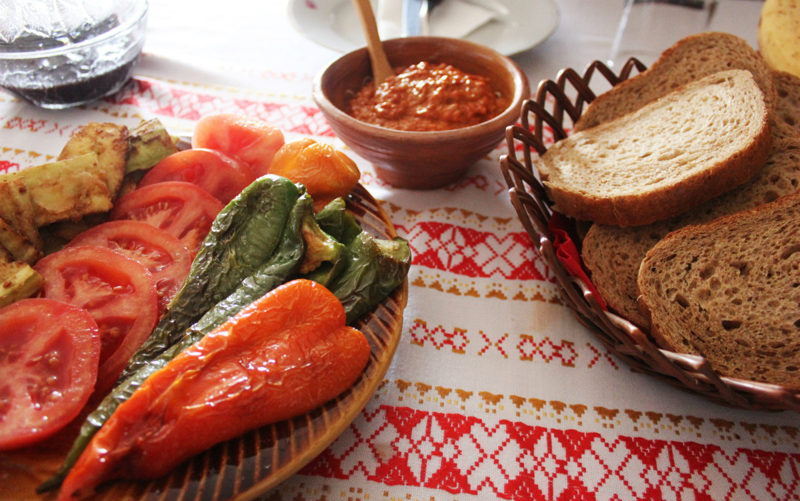

Things to do in Skopje...

Beauty of Matka
Visit St. Andrew’s Monastery, go hiking, cave diving, rock climbing, or practice kayak on the Treska River.
Read more →Old Bazaar
The Old Bazaar in Skopje is the largest bazaar in the Balkans outside Istanbul.
Read more →Memorial House for Mother Teresa
The building, dedicated to the most humane woman in the world was open on January 30, 2009.
Read more →

Tasty Traditional food
Famous, traditional Macedonian specialties, glass of the best Macedonian beer or wine.
Read more →